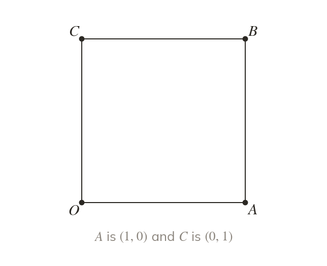
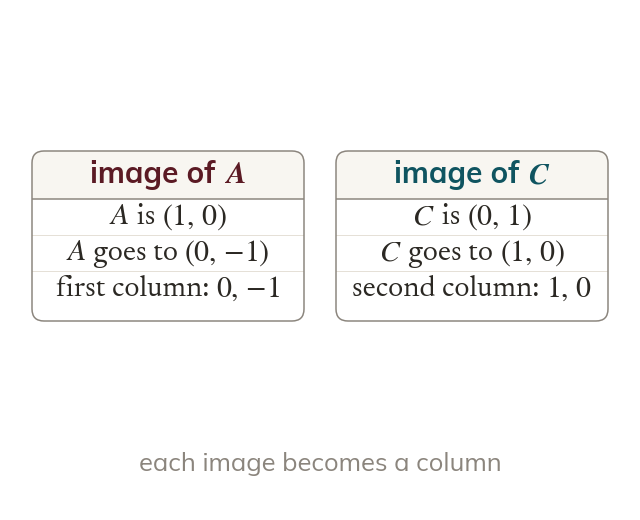
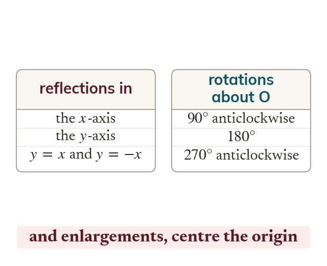
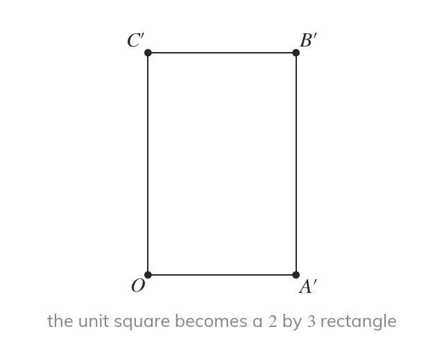
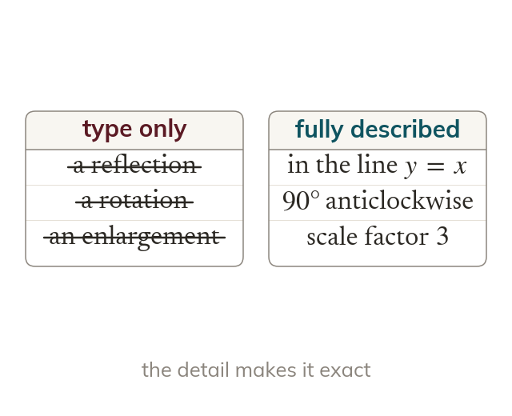

The unit square is how you read a matrix backwards: its corners are exactly the points whose images form the two columns, so from now on you can look at a matrix and say what it does rather than guess.
By the end you’ll know…
The unit square has vertices and
The images of and form the two columns of the transformation matrix.
The transformations examined on this specification are a closed list: reflections in the x-axis, y-axis, and ; rotations of and about the origin; and enlargements centred on the origin with positive or negative scale factor.
By the end you can
GFMDerive the matrix for a standard transformation by finding the images of and and write down the matrix for each transformation on the examinable list.
GFMSketch the image of the unit square under a given matrix, describe fully the transformation it represents, and work backwards to find the matrix from a given image.
Work down the page at your own pace. Write every answer in your book first, then click to check it.
01
Do Now
About 5 minutes
1
A transformation matrix has first column and second column What is the image of the point ?
the image of is always the matrix's first column.
2
A shape is enlarged by scale factor about the origin. The unit square has area What is the area of its image?
Area scales by the square of the scale factor
Remember these?
LAST LESSON. Write down a and
Equate corresponding elements and
LAST WEEKOn a cumulative frequency graph of values, which reading gives the median?
Read across from (half of to the curve, then down.
LAST TERMξ = {integers to A = {primes}. List A′.
LAST YEAR is invested at compound interest. What is it worth after years?
02
Learn
Read each card, then follow the worked examples one step at a time.

The unit square
The unit square has corners and The images of and fill the matrix's columns.
The unit square has corners and and and are the two points whose images fill the columns of a matrix. Following those two corners tracks the whole shape.

Images become columns
The image of A is the first column. The image of C is the second column.
The image of A is the first column of the matrix and the image of C is the second column. Writing the two images side by side gives the matrix straight away.

The closed list
Only reflections in four lines, three rotations and enlargements about the origin are examined. Each has a matrix found by following A and C.
Only reflections in four lines, rotations of and degrees anticlockwise, and enlargements about the origin are examined. Every one of them has a matrix found by following A and C.
WORKED EXAMPLE A
Find the matrix for a rotation of about the origin.
Follow the corners A and C, then write their images as the columns.
Follow A goes to
Follow C goes to
Matrix
WORKED EXAMPLE B
Find the matrix for an enlargement, scale factor centre the origin.
A negative scale factor sends each point through the origin to the far side.
Follow A goes to
Follow C goes to
Matrix
YOUR TURN · a
Find the matrix for a reflection in the line
Hint. Follow the worked example: Follow A → Matrix
goes to and goes to so the matrix is .
YOUR TURN · b
Find the matrix for a rotation of anticlockwise about the origin.
Hint. Follow the worked example: Follow A → Matrix
goes to and goes to so the matrix is .
03
Check your understanding
Pick an answer. If it's wrong, the feedback tells you which mistake it was.
The unit square has corners and Which two images are the columns of a transformation matrix?
Not quite. The first column comes from not from
Not quite. B is not The columns are the images of and
Not quite. O never moves, so its image tells you nothing. Use and
Yes. and are the points whose images give the first and second columns.
What is the matrix for a rotation of anticlockwise about the origin?
Not quite. This is anticlockwise. For anticlockwise, goes to
Yes. goes to and goes to so the columns are and
Not quite. This is a reflection in A rotation of sends to
Not quite. This is the half turn. A rotation of anticlockwise sends to
What is the matrix for an enlargement, scale factor centre the origin?
Not quite. This swaps x and y. An enlargement keeps on the x-axis it goes to
Not quite. This leaves where it is. Both and must be multiplied by
Not quite. Each image only has one non-zero coordinate goes to and to
Yes. goes to and goes to so those are the columns.
04
Practise
mark as you go
Checkpoint.Show your teacher before you go on
1.
Write the matrix for a reflection in the x-axis.
2.
Where do the unit square's corners and go?
A goes to ; C goes to
3.
How do those images give the columns?
The image of A is column ; the image of C is column
From your textbook
Section Transformations of the unit square Exercise questions that write down the matrix for each transformation on the list. Skip the rotation and invariant-point questions: the text marks them not examinable.
05
Learn
Read each card, then follow the worked examples one step at a time.

The image of the square
The images of A and C fix the whole new shape. The corner B is the sum of A and C. Its image is the sum of their images.
A matrix sends the unit square to a new shape, and the images of A and C fix every corner of it. The corner B is the sum of the two, so its image is the sum of their images.

Describing fully
A full description names the type and its detail. The type alone does not pin the transformation down.
A full description names the type and its detail: the mirror line for a reflection, the angle and direction for a rotation, the scale factor and centre for an enlargement. The type alone does not pin the transformation down.
A matrix moves the unit square
WORKED EXAMPLE C
Describe fully the transformation given by .
The columns are the images of A and C, so read them first.
Image of A goes to
Image of C goes to
Transformationreflection in the line
WORKED EXAMPLE D
The unit square is mapped to and Find the matrix and describe the transformation.
Only A' and C' are needed, because they give the columns.
Columnsthe images of A and C are and
Matrix
Transformationenlargement, scale factor centre
YOUR TURN · c
Describe fully the transformation given by .
Hint. Follow the worked example: Image of A → Transformation
goes to and goes to a rotation of anticlockwise about the origin.
YOUR TURN · d
The unit square is mapped to and Find the matrix and describe the transformation.
Hint. Follow the worked example: Columns → Matrix → Transformation
The columns are and so the matrix is a reflection in the line
06
Check your understanding
Pick an answer. If it's wrong, the feedback tells you which mistake it was.
Which transformation does represent?
Yes. goes to and stays, so the y-axis is the mirror line.
Not quite. A quarter turn would send to Here goes to
Not quite. The x-axis would keep fixed. Here goes to so the line is the y-axis.
Not quite. That is only the type. You also need the line here goes to
Under , the corner of the unit square moves to which point?
Not quite. This is the clockwise image. This matrix is a quarter turn anticlockwise.
Yes.Row Row
Not quite. A half turn would give Use row and row
Not quite. is the image of C. For B, add the two columns
The unit square is mapped to A'(0,1), and What is the matrix?
Not quite. This sends to Here A goes to
Yes. is the first column and is the second column.
Not quite. You wrote the images as rows. The image of A, is the first COLUMN.
Not quite. This sends to Here A goes to
07
Practise
mark as you go
Checkpoint. The unit square is mapped to A'(1,0), and Show your teacher before you go on
1.
Write the matrix.
Columns A' and C'
2.
Describe the transformation fully.
A reflection in the x-axis
From your textbook
Section Transformations of the unit square Exercise questions that sketch the image of the unit square, describe the transformation a matrix represents, and find the matrix from a given image. The area and unknown-scale-factor questions are extension.
08
Exit ticket
On paper, on your own, then check
1
State the four corners of the unit square, and say how their images give a transformation matrix.
and The image of A is the first column and the image of C is the second column.
2
Write the matrix for a reflection in the line
goes to and goes to
3
The unit square is mapped to and C'(1,0). Find the matrix and describe the transformation fully.
The columns are and so the matrix is . It is a rotation of anticlockwise about the origin.
Finished? Next lesson: 9.5 Combining Transformations.
09
How did it go?
Be honest: it's just for you
For each skill, tap the one that is true for you today. Your Revise pages start with anything you mark Not yet.
Derive the matrix for a standard transformation by finding the images of and and write down the matrix for each transformation on the examinable list.
Sketch the image of the unit square under a given matrix, describe fully the transformation it represents, and work backwards to find the matrix from a given image.
Your ratings are saved on this device only.
Practise more
After the lesson, or whenever you want more
Dr Frost
Log in, then search for a code to practise that skill.
691dTransform a unit square using a matrix.
692fWrite a matrix that represents a drawn transformation of a unit square.
692eDescribe the effect of a matrix representing a rotation (by a multiple of or reflection.